Time series anlaysis
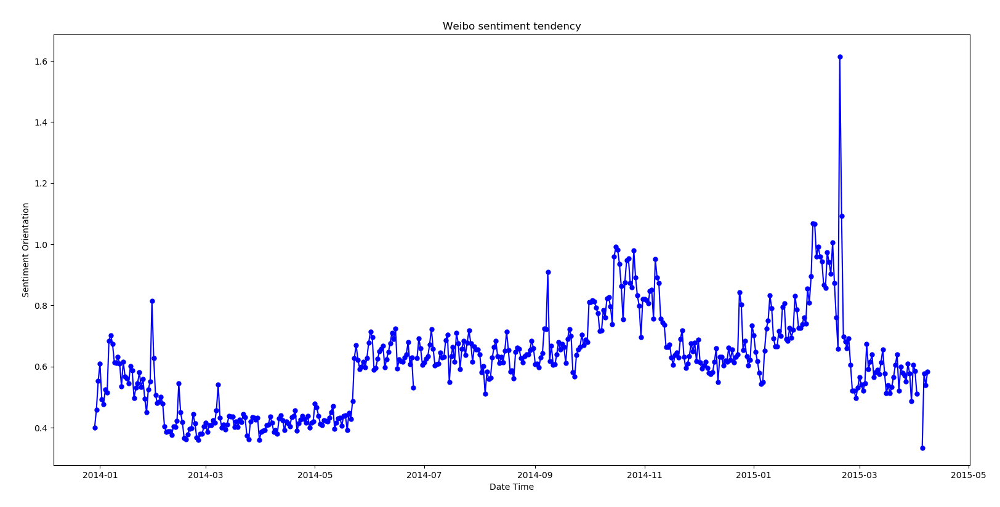
The 1st Local Max
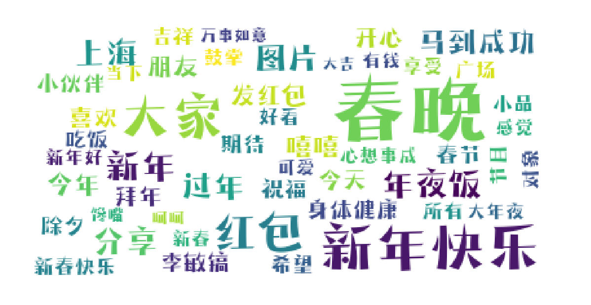
The 2nd Local Max
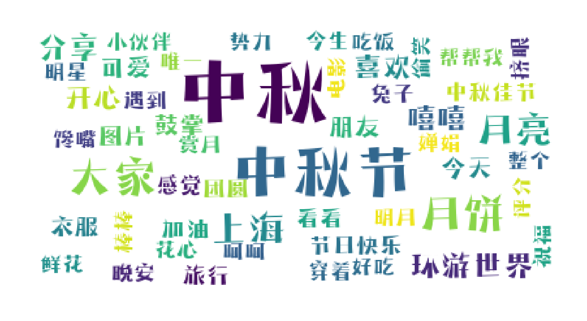
The 3rd Local Max
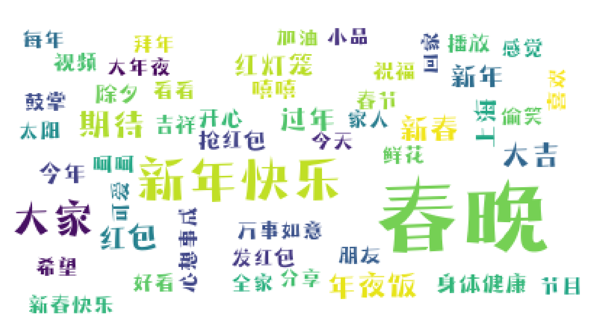
Negative Event on the 1st New Year Eve
Negative Traffic point distribution
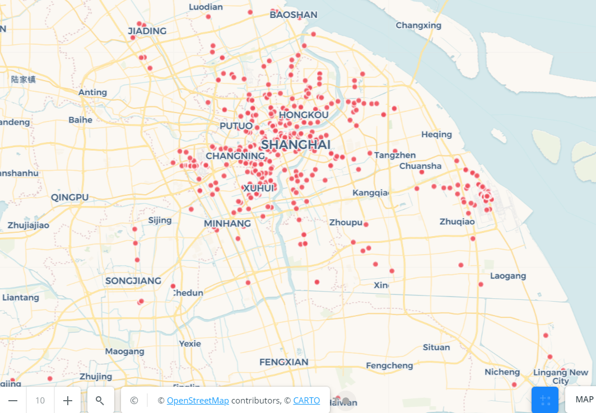
Negative Traffic Heat Map
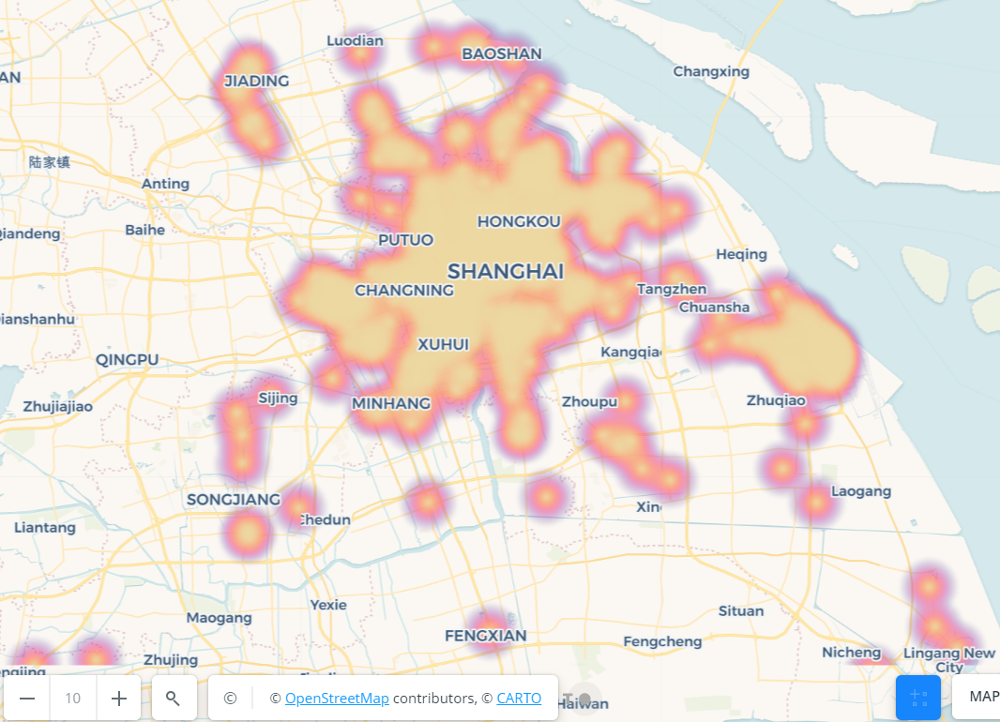
DBSCAN Clustering Algorithm Implementation
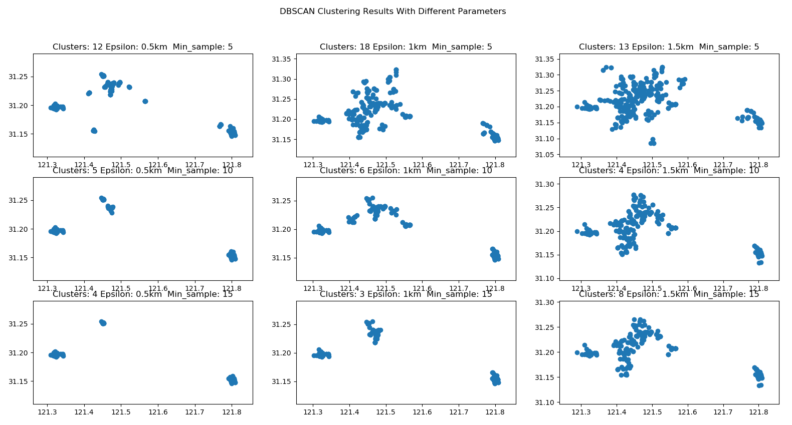
Three Clusters
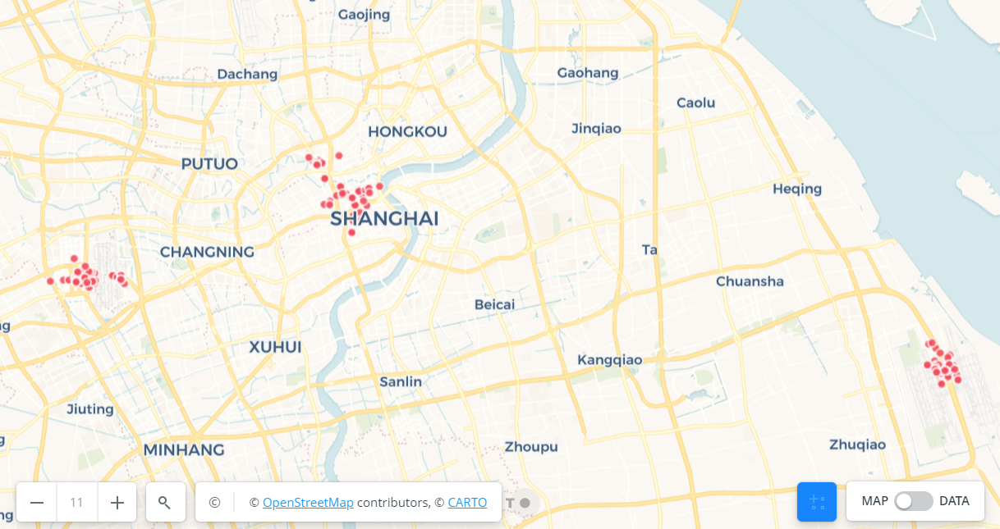
The 1st Cluster
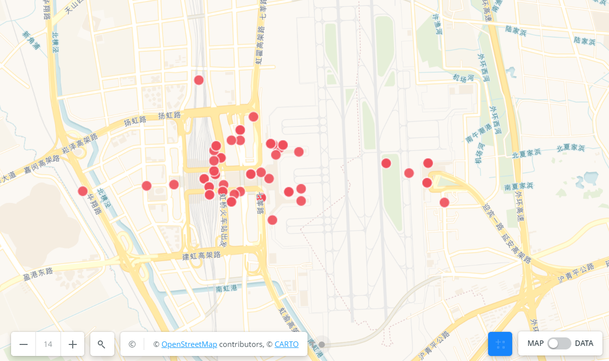
The 2nd Cluster
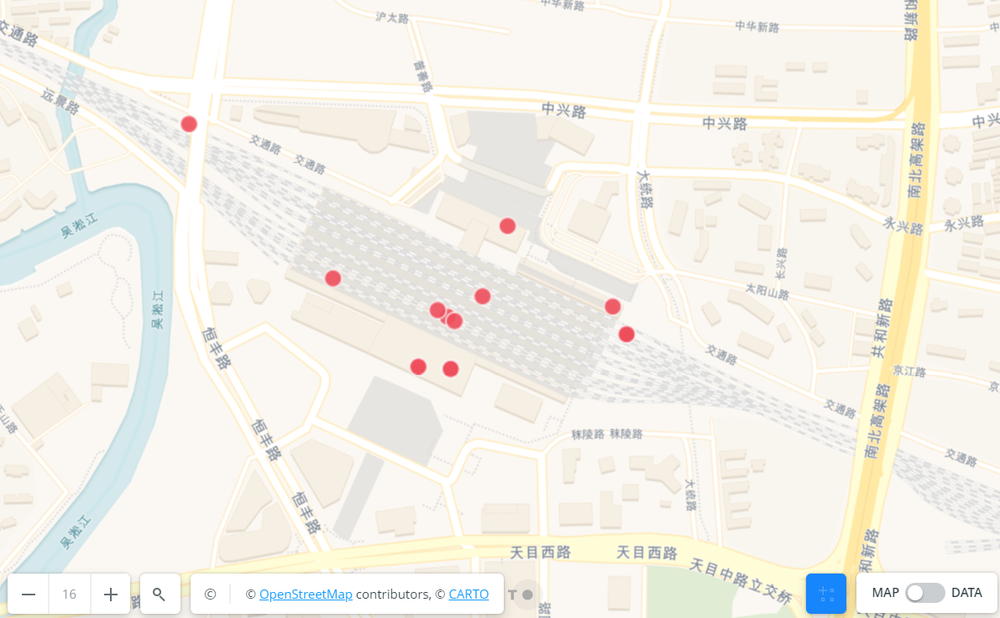
The 3rd Cluster
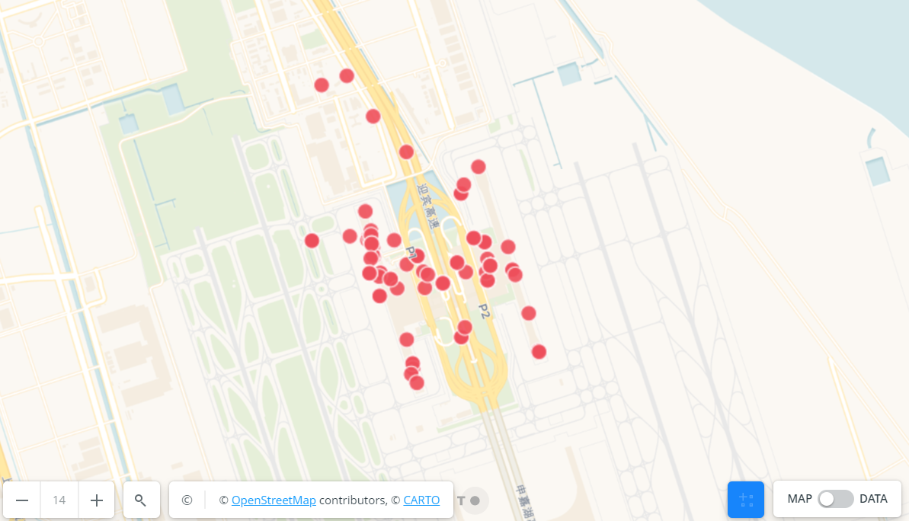
Local Event Detection
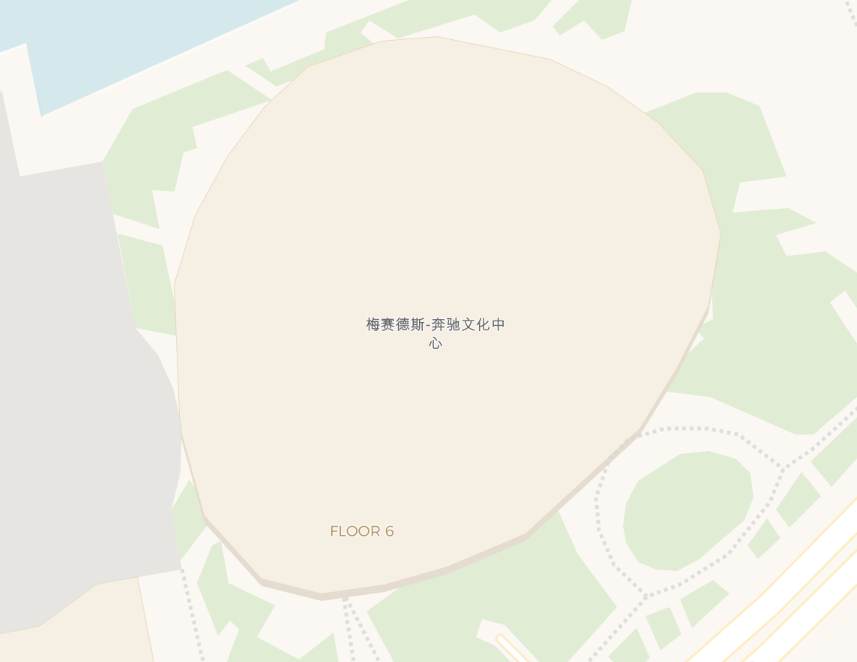
Time series analysis
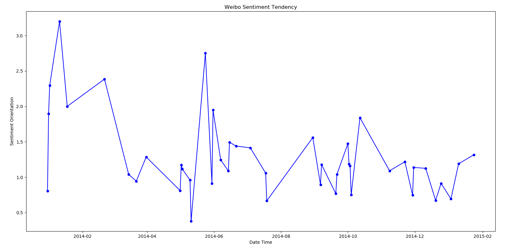
The 1st local Max
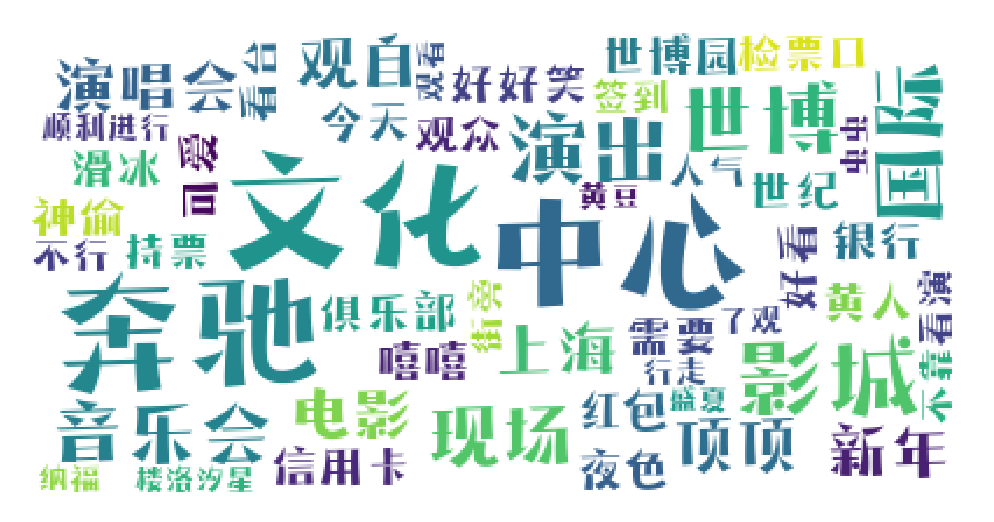
The 2nd local Max
The 3rd local Max
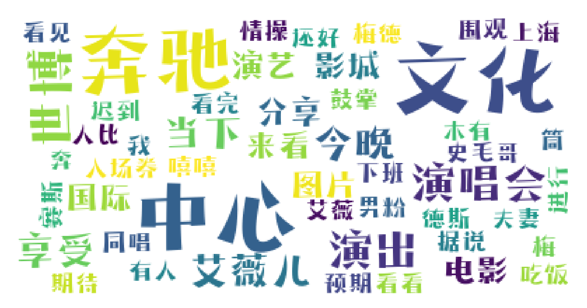
The local Min